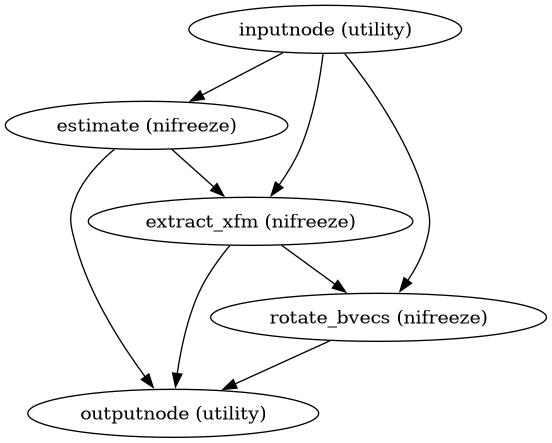

dmriprep.workflows.dwi.hmc module
Head motion and eddy-current correction estimation workflows.
These workflows estimate transforms without applying them, following the fit/transform architecture. Motion and eddy current distortions are estimated using NiFreeze’s leave-one-out cross-validation approach.
- dmriprep.workflows.dwi.hmc.init_dwi_hmc_flirt_wf(*, omp_nthreads=1, name='dwi_hmc_flirt_wf')View on GitHub
Build a fallback HMC workflow using FSL FLIRT.
This is a simpler alternative to NiFreeze-based estimation that uses FSL’s FLIRT for volume-to-reference registration. It is faster but less accurate, particularly for high b-value data where signal dropout makes direct registration challenging.
- Parameters:
omp_nthreads – Number of threads for parallel processing.
name – Workflow name.
- Inputs:
dwi_file – DWI NIfTI file.
in_bvec – File path of the b-vectors.
in_bval – File path of the b-values.
dwi_reference – Pre-computed b=0 reference image.
dwi_mask – Brain mask in DWI space.
- Outputs:
motion_xfm – Per-volume affine transforms.
out_bvec – Motion-corrected gradient directions.
- dmriprep.workflows.dwi.hmc.init_dwi_hmc_wf(*, omp_nthreads=1, model='DTI', name='dwi_hmc_wf')View on GitHub
Build a workflow for head motion and eddy-current estimation.
This workflow uses NiFreeze to estimate per-volume affine transforms for head motion correction and eddy-current distortion correction. The estimation uses leave-one-out cross-validation with diffusion models to predict each volume and register predicted to actual.
Importantly, this workflow only estimates transforms - it does not apply them. This enables downstream composition of all transforms for single-interpolation resampling.
- Workflow Graph

(Source code, png, svg, pdf)
- Parameters:
omp_nthreads – Number of threads for parallel processing.
model – Diffusion model for leave-one-out prediction (‘DTI’, ‘DKI’, ‘GP’, ‘average’).
name – Workflow name.
- Inputs:
dwi_file – DWI NIfTI file.
in_bvec – File path of the b-vectors.
in_bval – File path of the b-values.
dwi_reference – Pre-computed b=0 reference image.
dwi_mask – Brain mask in DWI space.
- Outputs:
motion_xfm – Per-volume affine transforms (list of files).
out_bvec – Motion-corrected (rotated) gradient directions.
motion_params – Motion parameters TSV file (BIDS confounds format).
estimated_file – HDF5 file containing full estimation results.
Notes
The estimation approach varies by model:
DTI: Tensor model, fast but less accurate for high b-values
DKI: Kurtosis model, better for multi-shell data
GP: Gaussian Process, most flexible but computationally intensive
average: Simple averaging, fastest but least accurate
{kind=link}
{kind=link}